Alexander Lundervold
Department of Computing, Mathematics and Physics, HiB
A collaboration with Aasmund Kvamme and Kristine Selvikvåg, also at HiB
Currently piloting two e-learning solutions for some of our maths courses at HiB:
WeBWorK
An open-source online homework system built by Michael Gage and Arnold Pizer (Univ. of Rochester)webwork.maa.org
They recently won the 2016 AMS Impact Award for the creation and development of WeBWorK
We use it for both obligatory assignments and voluntary exercises
Possible to pose a broad range of questions
Much more than multiple choice!
Students have to do pen and paper calculations
Immediate feedback. Problems are automatically corrected
Students can get hints based on their answer
Instructor solutions
{kind=link}
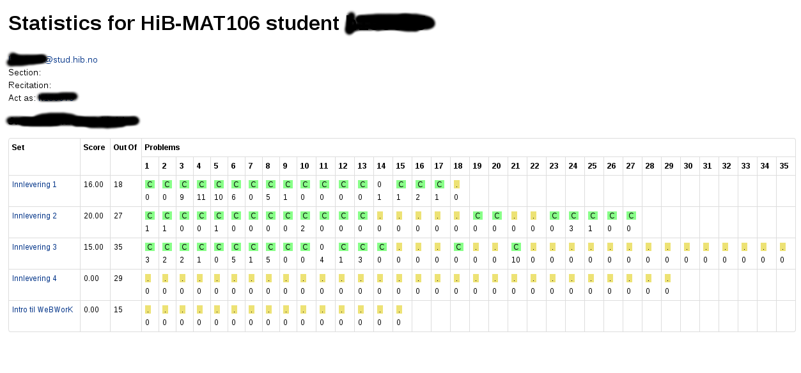
{kind=link}
Attempted answers give insight into thought process
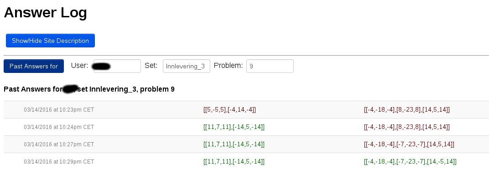{kind=link}
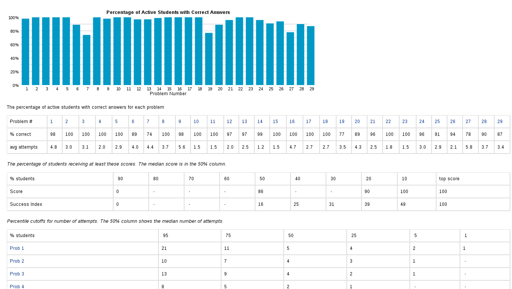
{kind=link}
Something wrong with the problem?
Need to repeat something in class?
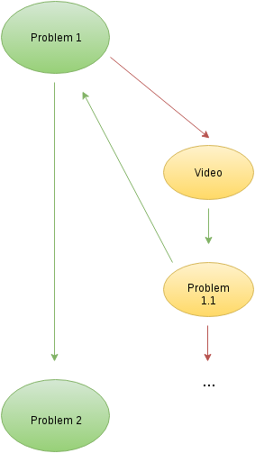
{kind=link}
Institutions using WebWorK
More than 1000
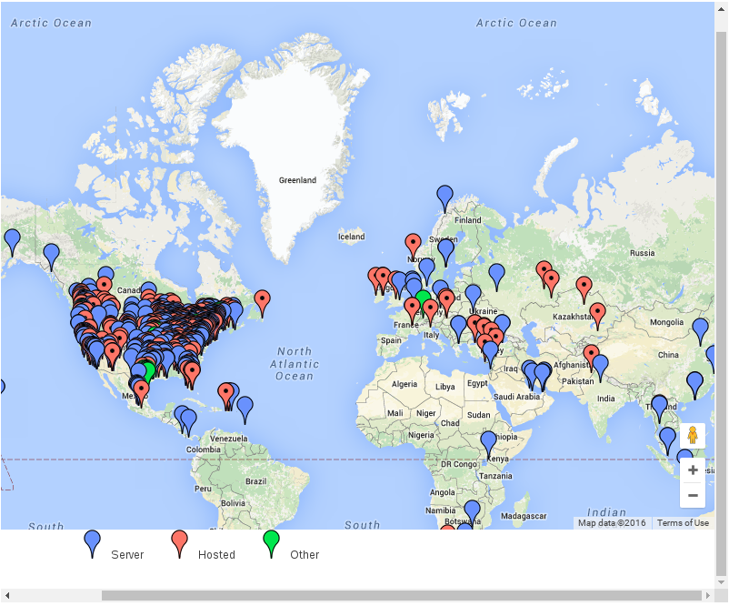The Open Problem Library contains approx 30.000 problems
We are creating our own library of exercises tailored to our students (in Norwegian)
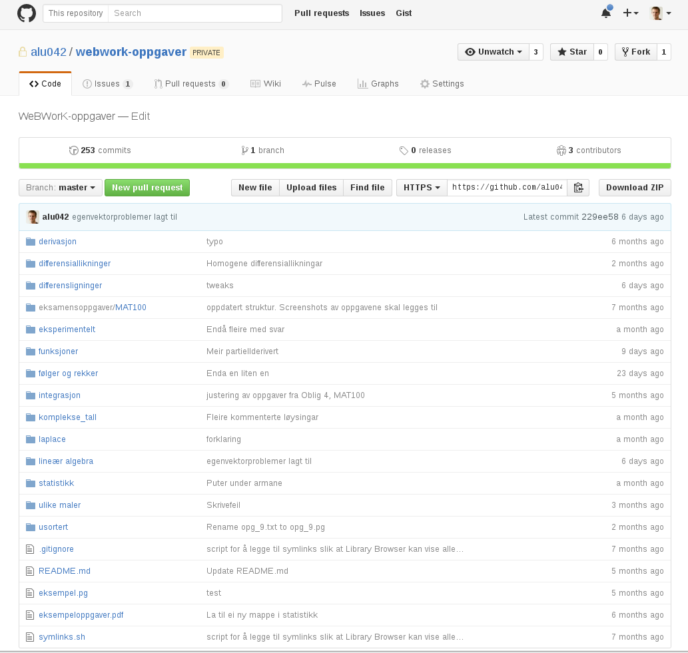
{kind=link}
- Students given instant feedback. Able to correct misunderstandings immediately
- Students given lots of practice, without additional work for lecturer or student assistants.
- Able to give many more obligatory exercises than before (don't tell the students!)
- Feedback from students very positive (questionnaires and student interviews)
We combine CAA with good ol' teacher aided assessment. Students must show that they can reason mathematically.
(click image)
Authoring problems
Only if necessary: easier to use the problem libraries
DOCUMENT();
loadMacros(
"PGstandard.pl",
"PGML.pl",
"MathObjects.pl",
"PGcourse.pl",
"parserNumberWithUnits.pl",
"contextArbitraryString.pl",
"parserMultiAnswer.pl",
"parserPopUp.pl",
"contextInequalities.pl",
"PGgraphmacros.pl",
);
#Set-up
$f = Formula("sin(x)+x^2");
$Df = $f->D;
TEXT(beginproblem());
#######################################
BEGIN_PGML
If [:f(x) = [$f]:], then [:f'(x) = :] [______________________]{$Df}
END_PGML
#######################################
ENDDOCUMENT();
DOCUMENT();
loadMacros(
"PGstandard.pl",
"PGML.pl",
"MathObjects.pl",
"PGcourse.pl",
"parserNumberWithUnits.pl",
"contextArbitraryString.pl",
"parserMultiAnswer.pl",
"parserPopUp.pl",
"contextInequalities.pl",
"PGgraphmacros.pl",
);
#Set-up
$a = random(2,5,1);
TEXT(beginproblem());
#######################################
BEGIN_PGML
The parabola that opens upward and passes through [`x = [$a]`] and [`x = 0`]
is [` y = `] [_______________________]{"x(x-$a)"}
END_PGML
#######################################
ENDDOCUMENT();
DOCUMENT();
loadMacros(
"PGstandard.pl",
"PGML.pl",
"MathObjects.pl",
"PGcourse.pl",
"parserNumberWithUnits.pl",
"contextArbitraryString.pl",
"parserMultiAnswer.pl",
"parserPopUp.pl",
"contextInequalities.pl",
"PGgraphmacros.pl",
);
#Set-up
$a = random(2,8,1);
$b = random(3,9,1);
$c = $a * $b;
$answer = Compute("(pi/3) * $a * $b^3");
TEXT(beginproblem());
#######################################
BEGIN_PGML
Find the volume of the solid obtained by rotating the region bounded by
>> [`` y = [$a] x + [$c], \ y = 0, \ x = 0 ``] <<
about the [`y`]-axis.
Volume = [____________________]{$answer}
END_PGML
#######################################
ENDDOCUMENT();
Things to discuss
Huge plus if HiB and UiB used the same assessment system. Very similar curriculum (in fact, same textbook from Fall 2016: Adams and Lay).
Shared library of problems. Share insights.
WeBWorK vs. MapleTA etc?
- Open source vs closed source
- Free* vs paid
- Which one is more convenient?
(* some cost for hosting; can be shared)
Open edX
An open-source MOOC platform built by (among others) MIT and Stanford University. Powers edX.org

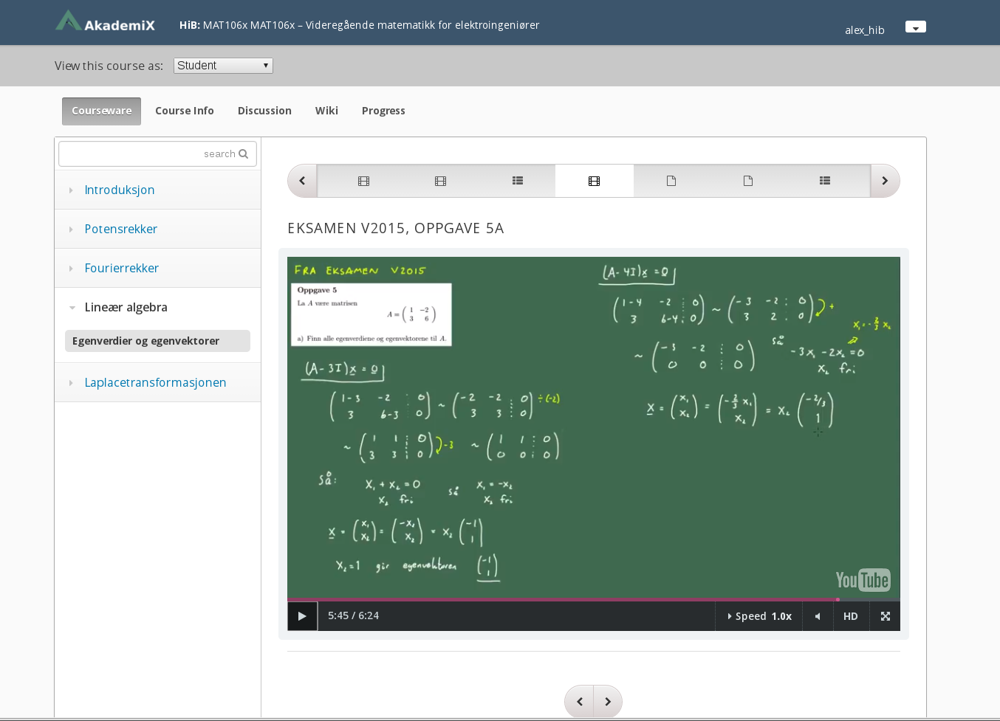
{kind=link}
Students are able to watch and rewatch examples as many times as they like, whenever they like, at a speed they find comfortable. Until topic is mastered.
Tracking engagement and results. Number of times watched; Number of attempts at exercises, etc
Individualized and differentiated

 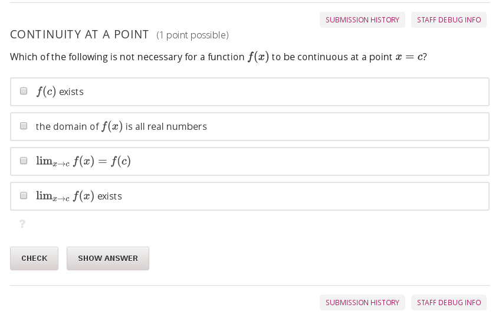
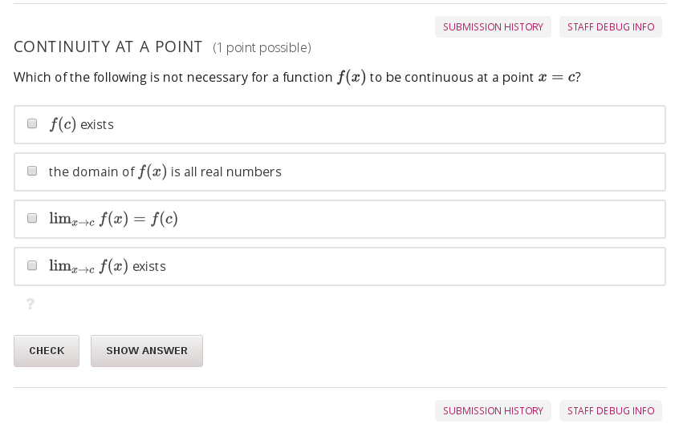
{kind=link}
The computer algebra system can be extended through e.g. the "Learning Tools Interoperability" specification.
{kind=link}
{kind=link}
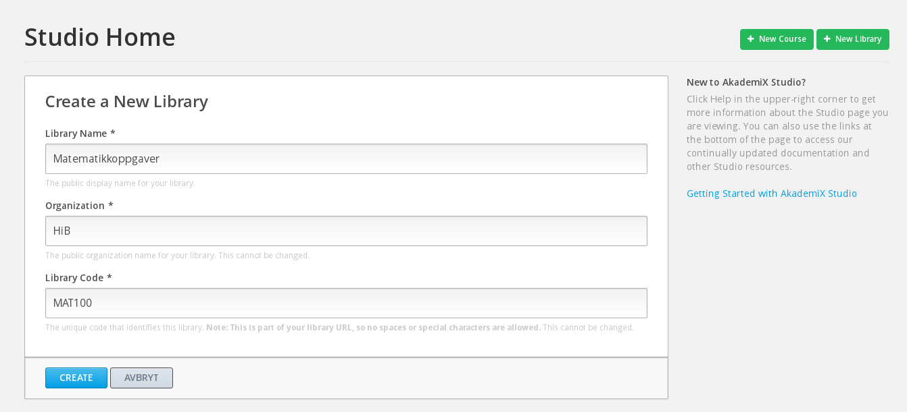
{kind=link}
Will create an exercise library
Designing the framework of a course is easy
Bigger challenge: designing the actual content
MAT106x is an early prototype with limited coverage of the curriculum
Next semester: me and another lecturer will work 25% each to develop MAT100x and "Matte 2"x
(click image)
What we needed
- A way to create videos
- A platform to host and deliver the videos in a structured course, with assessment etc
The studio
The platform
- Based on WeBWorK and Open EdX
- Cloud-based and scalable (Amazon AWS)
- Cross-institutional
beta.akademix.no
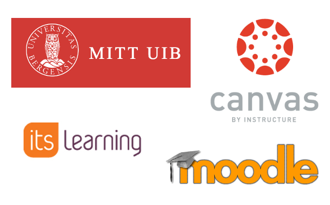
Open. Not course-specific. Clean and uncluttered. Tracking and analytics. Powerful delivery and assessment methods.
But, important to play nice with LMS: single-sign on, passback of grades etc. Using LTI.
Long term ambition:
Change the way we teach mathematics at HiBCourses consisting of three (interconnected) parts:
- Exercise sessions supported by online video material
- Computer labs with projects, problem solving and discussions
- Overview lectures focusing on ideas, concepts and applications
Instructivism + Constructivism
Sage on the stage + Guide on the side